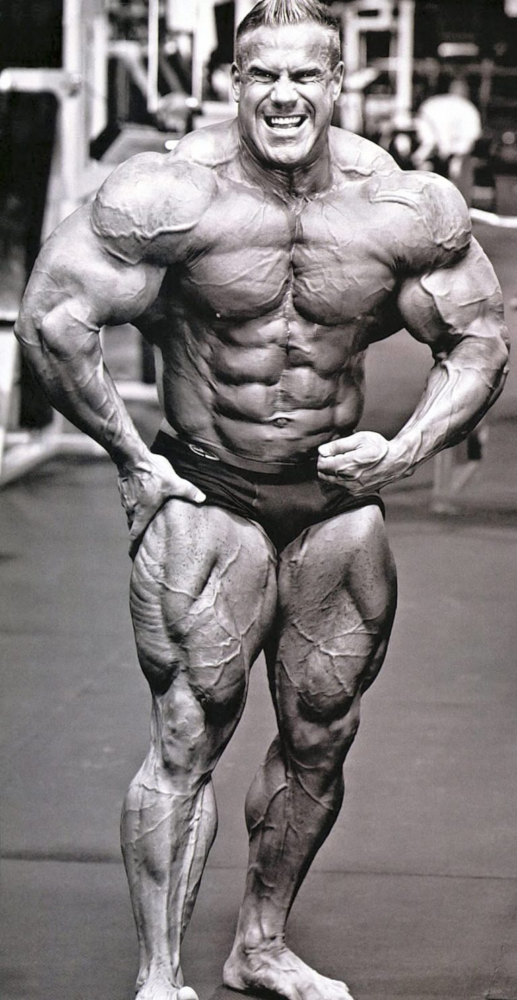

Jay Cutler è nato il 3 agosto 1973 a Sterling, Massachusetts. Cresciuto in una famiglia numerosa con sei fratelli, Cutler ha sviluppato una forte etica del lavoro sin da giovane, aiutando nella ditta di calcestruzzi di famiglia. Questa formazione ha contribuito a forgiare la sua straordinaria forza fisica e determinazione. Cutler ha scoperto il bodybuilding durante gli anni del liceo e, dopo il diploma, ha deciso di dedicarsi completamente a questa disciplina. Ha frequentato il Quinsigamond Community College, dove ha studiato giustizia penale, ma la sua passione per il bodybuilding ha presto preso il sopravvento.
La carriera sportiva di Jay Cutler è iniziata negli anni '90, quando ha iniziato a competere nelle gare locali di bodybuilding. Il suo primo grande successo è arrivato nel 1993, quando ha vinto il Teen Nationals. Nel 1996, ha ottenuto la sua carta professionale vincendo il NPC Nationals. Cutler ha rapidamente scalato le classifiche del bodybuilding professionale, diventando uno dei principali contendenti per il titolo di Mr. Olympia. Dopo diversi piazzamenti al secondo posto, ha finalmente vinto il suo primo titolo di Mr. Olympia nel 2006, sconfiggendo Ronnie Coleman. Ha mantenuto il titolo fino al 2007 e lo ha riconquistato nel 2009 e nel 2010, per un totale di quattro vittorie. La sua carriera è stata segnata da una rivalità leggendaria con Ronnie Coleman, che ha elevato entrambi gli atleti a status iconico nel mondo del bodybuilding.
La filosofia di bodybuilding di Jay Cutler si basa su una combinazione di allenamento intensivo, nutrizione meticolosa e recupero adeguato. Cutler ha sempre enfatizzato l'importanza di ascoltare il proprio corpo e di adattare l'allenamento e la dieta in base alle esigenze individuali. La sua attenzione ai dettagli e alla pianificazione è stata fondamentale per il suo successo. Cutler crede nell'importanza di un approccio olistico al bodybuilding, che include non solo l'allenamento con i pesi, ma anche il cardio, la nutrizione, il sonno e la gestione dello stress. La sua capacità di mantenere una condizione fisica ottimale durante tutto l'anno lo ha reso un esempio per molti appassionati di fitness.
Il metodo di allenamento di Jay Cutler è noto per la sua intensità e il suo volume elevato. Cutler divideva i suoi allenamenti in routine specifiche per ciascun gruppo muscolare, allenandosi sei giorni alla settimana. Ogni sessione di allenamento comprendeva numerosi esercizi, set e ripetizioni, con l'obiettivo di stimolare al massimo la crescita muscolare. Cutler utilizzava una combinazione di movimenti composti e di isolamento, variando frequentemente gli esercizi per evitare la stagnazione. Inoltre, dava grande importanza al controllo del peso e alla forma corretta per prevenire infortuni e garantire una crescita muscolare efficace. La sua dedizione e il suo rigore nell'allenamento sono stati elementi chiave del suo successo competitivo. In sintesi, Jay Cutler è una figura emblematica nel mondo del bodybuilding, noto per la sua straordinaria carriera sportiva, la sua filosofia di allenamento equilibrata e il suo metodo di allenamento ad alta intensità. La sua dedizione al bodybuilding, combinata con la sua meticolosa attenzione ai dettagli, ha fatto di lui uno dei bodybuilder più rispettati e influenti della sua generazione.